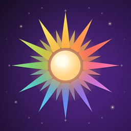

Nevra Nizamoğlu
Independent developer in Türkiye. I make small apps about days worth marking, words worth keeping, and caves worth digging.

Dayfeed
iOS · AndroidThe world's special days, and a poster maker for the ones you want to share. 799 days in five languages.
Lubunca Sözlük
iOS · AndroidA dictionary of Lubunca, the Turkish queer argot — its words, what they mean, and where they came from.